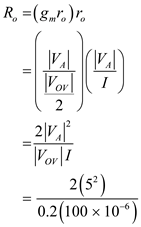
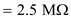
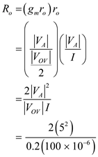
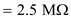
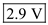
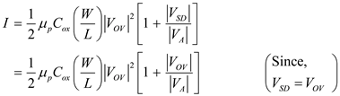
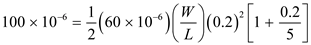
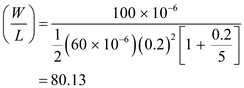
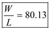
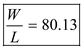

Refer to Figure 7.10 in the textbook for the circuit.
The output resistance of the cascade current source is,


Thus, the output resistance is, .
Calculate the voltage  .
.
Calculate the voltage .
Thus, the voltage is,
Refer to Figure 7.10 in the textbook for the circuit.
The output resistance of the cascade current source is,


Thus, the output resistance is, .
Calculate the voltage .
Calculate the voltage .
Thus, the voltage is,
To allow largest possible signal swing at the output terminal, use minimum required voltage  across
across  .
.
Calculate the voltage .
Since the two transistors are identical and are carrying equal currents, the voltage is,
Calculate the voltage .
Thus, the voltage is, .
The maximum voltage allowed at the output terminal of the current source is strained by the need to allow a minimum voltage of  across
across  .
.
The highest allowable voltage at the output is,
Thus, the highest allowable voltage at the output is .
The bias current in the circuit is,

Substitute  for
for  , for
, for  ,
,  for
for  , and
, and  for in the equation.
for in the equation.


Thus, the  ratio is, .
ratio is, .